This tutorial will show you how to integrate Docker with Pycharm to develop with Python. The prerequisites are that Pycharm Pro must be installed, Git must be installed, and Docker must be running. Please follow the steps below!:
For this tutorial, you will clone the pre-created repository, linked here.
Copy the link to this repository
You can see that the repository has a Python Script, a Gitignore, and a Dockerfile.
The Dockerfile installs Python 3, Takes code in the source folder and adds it to the source folder in the container, runs install from pip. and runs the Python command from the directory "./src/my_script.py".
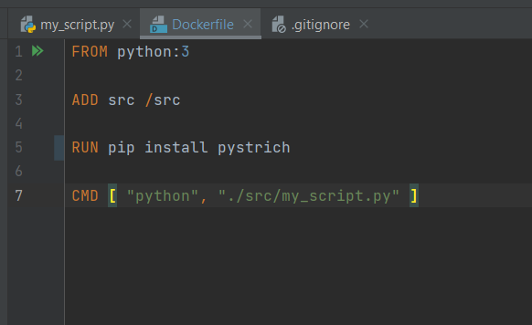
Click on File- Settings
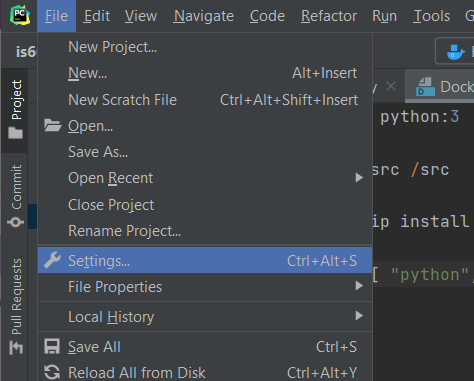
Under Build Execution, and Deployment, select Docker
*This tutorial is for Windows Pro*
1. Go to Docker Desktop, and go to Settings.
2. Ensure "Expose daemon on Tcp://localhost:2375 without TLS" is checked off as you can see below:
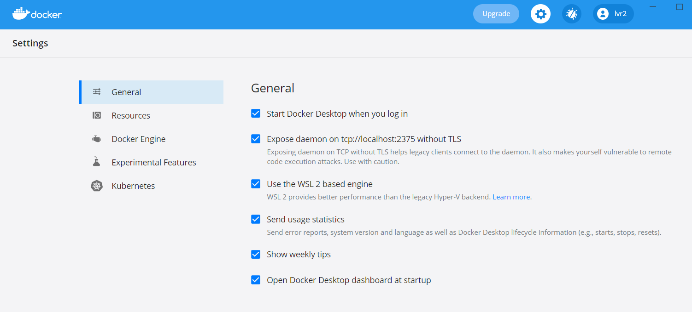3. In Pycharm, select TCP Socket and add the link:
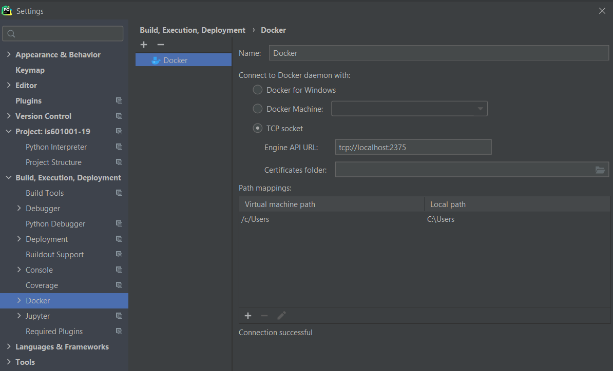In the top right-hand corner, select "Add Configuration"
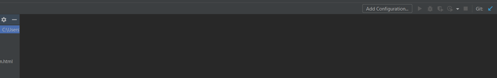Select add, then Docker-Dockerfile
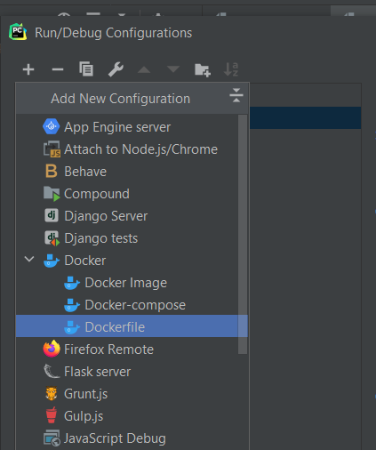
Name the run configuration "Barcode", name the image "barcode"(image tag), select "Dockerfile" from the dropdown, and ensure the "Run Built Image" checkbox is checked.
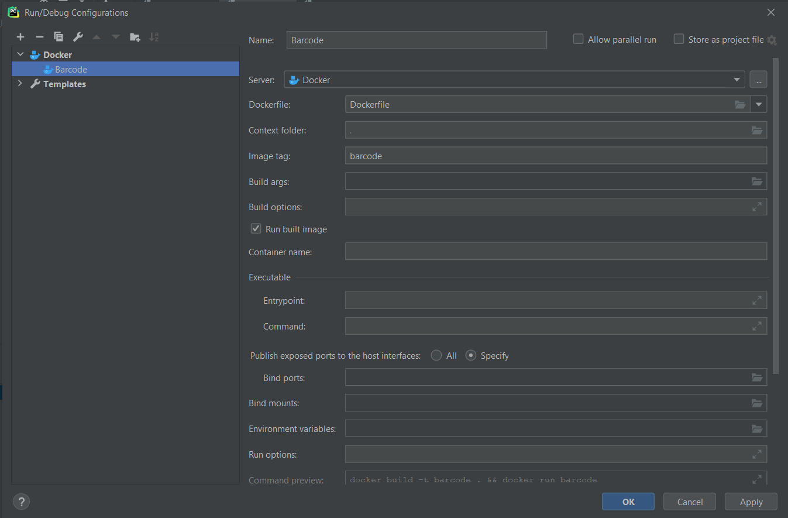
Hit "Apply" and "OK"
Press Play to run, and that will bring up the Docker Console
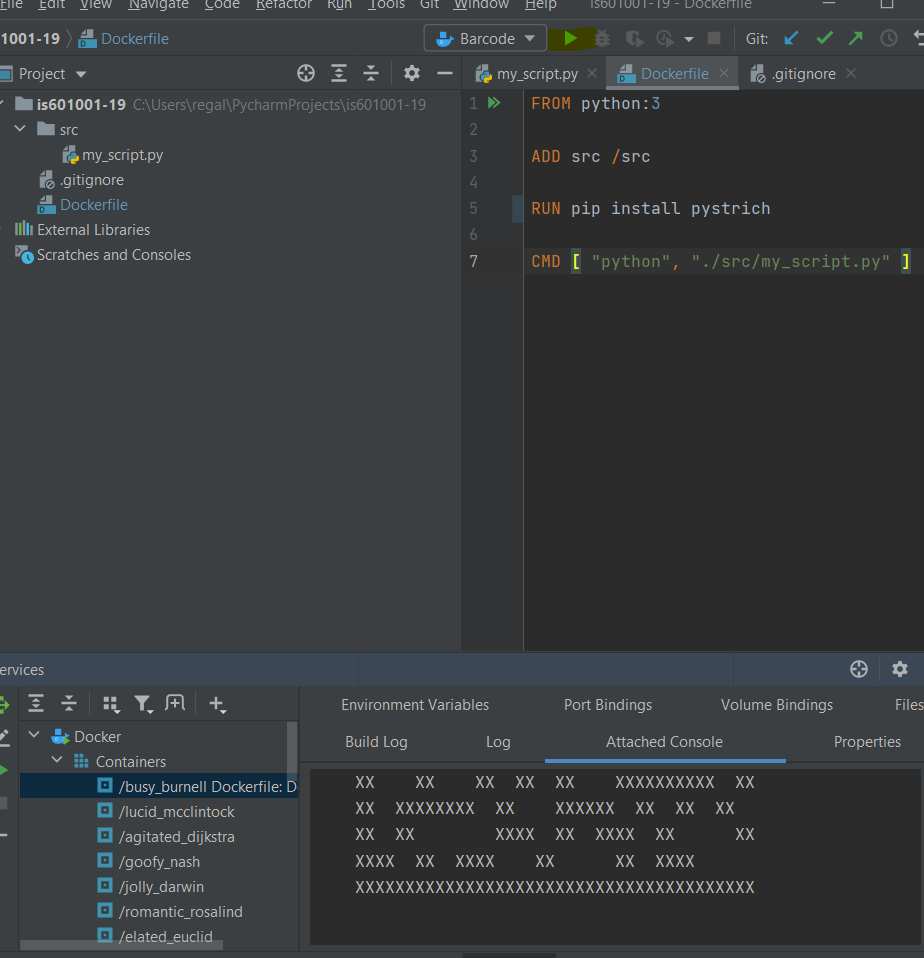
The Containers are shown on the left
At the bottom right corner, click "Add Interpreter"
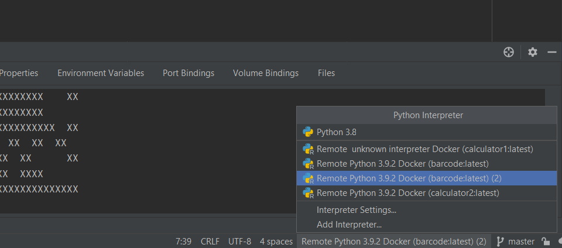
Click Docker, it will register, then hit "OK"
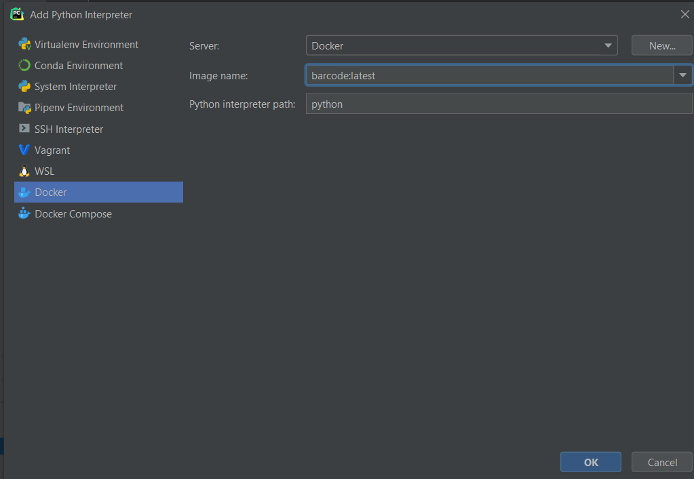
Then at the bottom corner, select the interpreter you just created
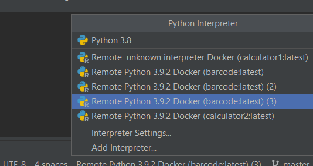
Then select Interpreter settings to ensure the libraries you installed have been picked up
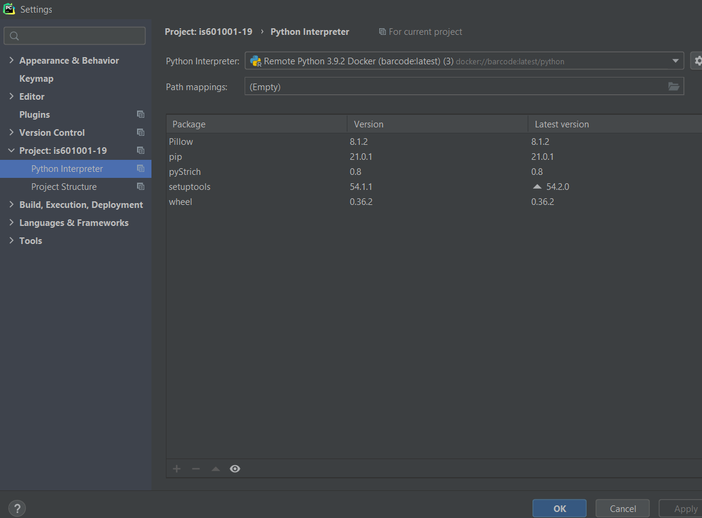
Validate and hit "OK"
There you have it, you have setup Docker with Pycharm to be able to develop with Python!
Source: IS 601 Youtube